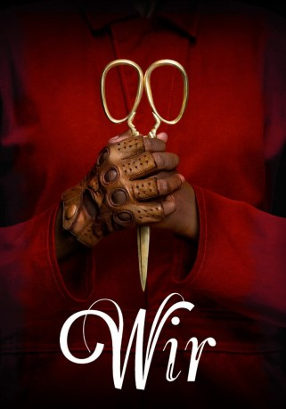

gesehen am 17.06.2019
gesehen am 17.06.2019Alternativ: Us (Englischer Titel) gesehen am 17.06.2019
 
 IMDB-Wertung: 7.0 / 10
IMDB-Wertung: 7.0 / 10  Tomatometer: 94
Tomatometer: 94  Metascore:
Metascore: 
Adelaide Wilson (Lupita Nyong'o) und ihr Mann Gabe (Winston Duke) möchten mit ihren Kindern Zora (Shahadi Wright Joseph) und Jason (Evan Alex) ein paar entspannte Sommertage an der nordkalifornischen Küste verbringen. Mit ihren Freunden, der Tyler-Familie um Kitty (Elisabeth Moss), Josh (Tim Heidecker) und ihren Zwillingstöchtern Becca (Cali Sheldon) und Lindsey (Noelle Sheldon), haben sie auch einen mehr oder weniger schönen ersten Urlaubstag am Strand. Doch als die Wilsons zurück in ihrem Ferienhaus sind, nähern sich am Abend plötzlich seltsame und furchteinflößende Gestalten ihrem Heim. Die ungebetenen Besucher jagen ihnen nicht nur große Angst ein, sie sehen den einzelnen Familienmitgliedern auch verstörend ähnlich. Brutal dringen sie schließlich in ihre Welt ein und machen gnadenlos Jagd auf die Wilsons. Adelaide, Gabe, Zora und Jason sind gezwungen, um ihr Überleben zu kämpfen und müssen sich gleichzeitig selbst jagen...
Jahr: 2019
Dauer: 116 Minuten
FSK: 16
Land: USA Studio: Universal PicturesTonspuren: DD5.1 - ,
Untertitel: Deutsch,
Auflösung: 1080p (1920x808) Größe: 8448 MB
Genre: Thriller, Horror, Mystery
Regisseur: Jordan Peele
Drehbuch: Jordan Peele
Soundtrack: Michael Abels
Darsteller:
 Lupita Nyong'o als Adelaide Wilson / Red
Lupita Nyong'o als Adelaide Wilson / Red Winston Duke als Gabe Wilson / Abraham
Winston Duke als Gabe Wilson / Abraham Elisabeth Moss als Kitty Tyler / Dahlia
Elisabeth Moss als Kitty Tyler / Dahlia Tim Heidecker als Josh Tyler / Tex
Tim Heidecker als Josh Tyler / Tex Yahya Abdul-Mateen II als Russel Thomas / Weyland
Yahya Abdul-Mateen II als Russel Thomas / Weyland Dustin Ybarra als Troy / Brand
Dustin Ybarra als Troy / Brand Kara Hayward als Nancy / Syd
Kara Hayward als Nancy / Syd Andrew Constantini als Ballet Spectator / Underground (uncredited)
Andrew Constantini als Ballet Spectator / Underground (uncredited)Datei: X:\2019(N-Z)\Wir (2019, FSK16, 1920x808).mkv seit 17.06.2019
Festplatte: HD 2018(G-Z)-2019(A-Z)
 Es gibt insgesamt 62 Filme in der Gruppe '2019(N-Z)'
Es gibt insgesamt 62 Filme in der Gruppe '2019(N-Z)'